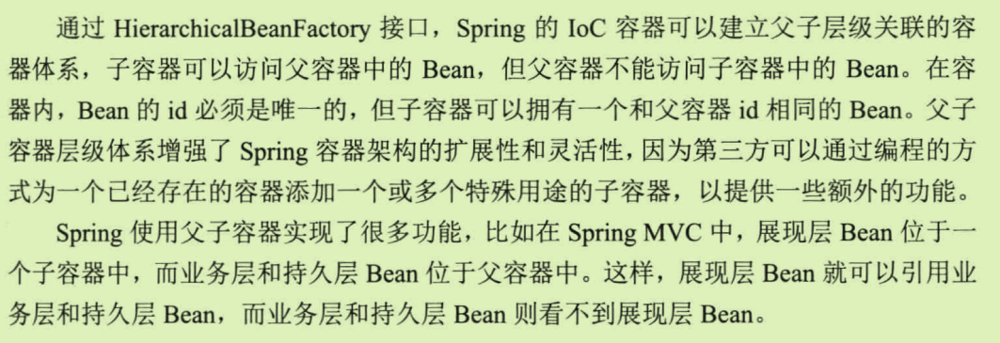

IoC
Inverse of Control 控制反转
某一接口的具体实现类的选择控制权从调用类中移除，转交给第三方决定，即Spring容器借由Bean配置来进行控制。不够容易理解。
提出DI（Dependency Injection)依赖注入来代替IoC
调用类对魔衣接口的实现类的依赖关系由第三方注入，以移除调用类对某一接口实现类的依赖。

IoC类型
构造函数注入
属性注入
并非每个场景都需要注入，通过构造函数不妥当。
接口注入
需要额外声明一个接口，效果和属性注入并无区别，不提倡。
JAVA反射机制
可以通过编程的方式调用Class的各项功能，只不过是通过反射类(ClassLoader Class Constructor Method)的间接调用。
资源访问
资源抽象接口
资源加载
“classpath:”假设多个jar包或者文件系统类路径有相同的包名如com.smart 这个会扫描所有的而没有\的只会扫描第一个加载的
BeanFactory 和 ApplicationContext
BeanFactory
ApplicationContext

AOP
Aspect Oriented Programing 面向切面编程
关键概念
- 连接点–程序执行的某个位置，Spring仅支持方法的连接点-比如方法执行前后
- 切点–查询条件 可以一对多个连接点
- 增强–织入目标类连接点上的一段程序代码 还有另一个和连接点相关的信息–执行点的方位
- 目标对象
- 织入–将增强加到目标类的具体链接点上的过程–三种 编译期 类装载期 动态代理（Spring采用）
- 引介–特殊的增强，为类添加一些属性和方法
- 代理–织入增强后产生了一个结果类，是结合了原类和增强逻辑的代理类
- 切面–切点和增强（引介）组成
工作重心在于如何将增强应用到目标对象的连接点上。
- 如何通过切点和增强定位到连接点
- 如何在增强中编写切面代码